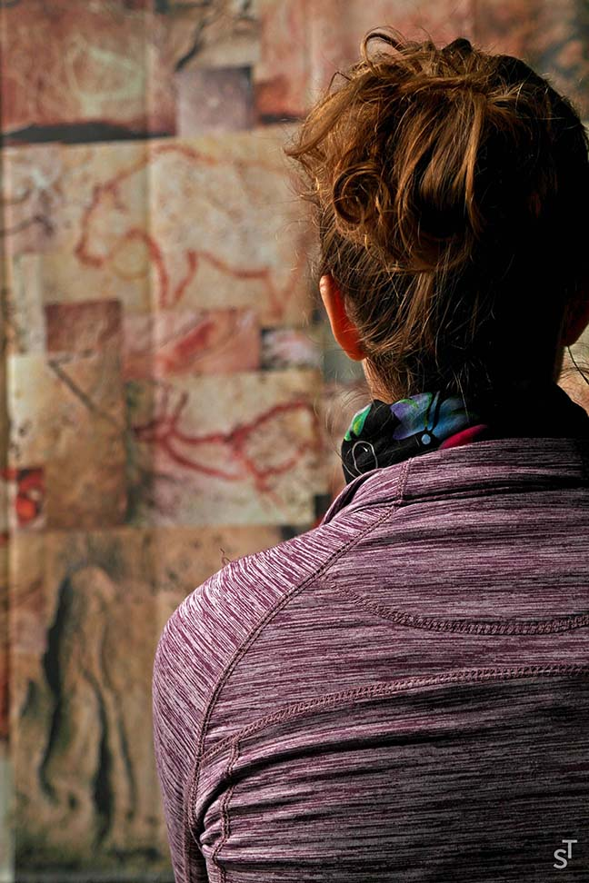
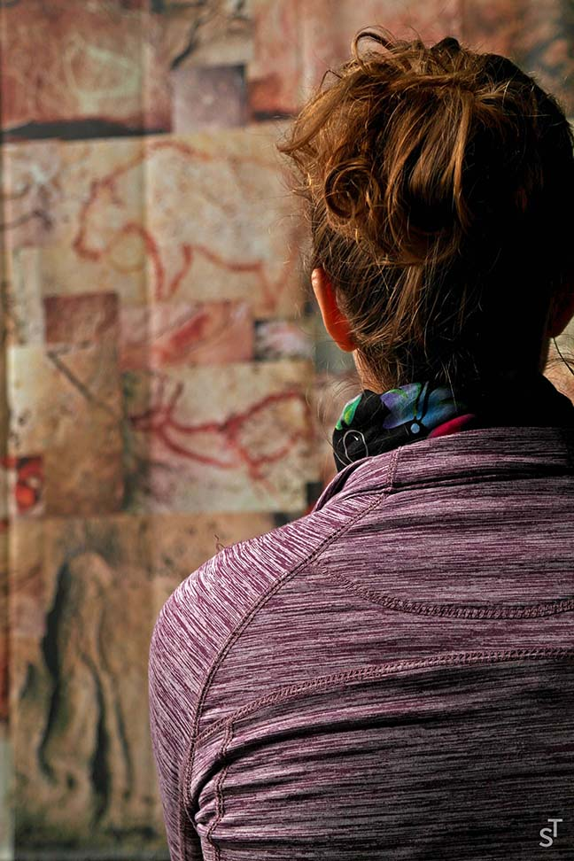

ST / ART
Hover over any image for a brief description.
Photography for me is primarily means of documenting the adventures I find myself on. You will therefore find most of my pictures in the TRAVEL section.
I also draw using pencil or charcoal, and paint with acrylic paints, mainly on canvas. Being close to computers and design, I have always experimented with digital art as well. While my photography does not have any particular focus, in my paintings and drawings I tend to capture people.
Please do not distribute any images on this website without my express authorization.


 
